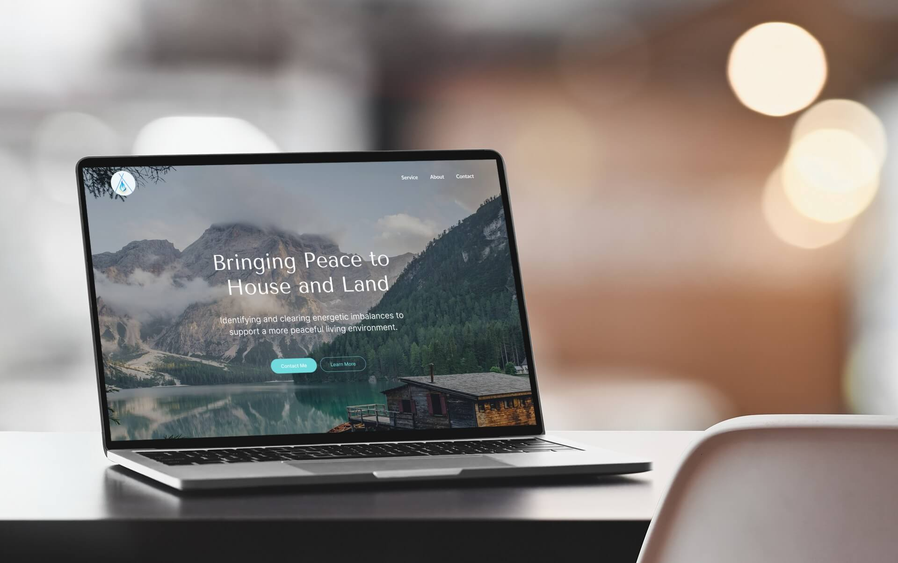
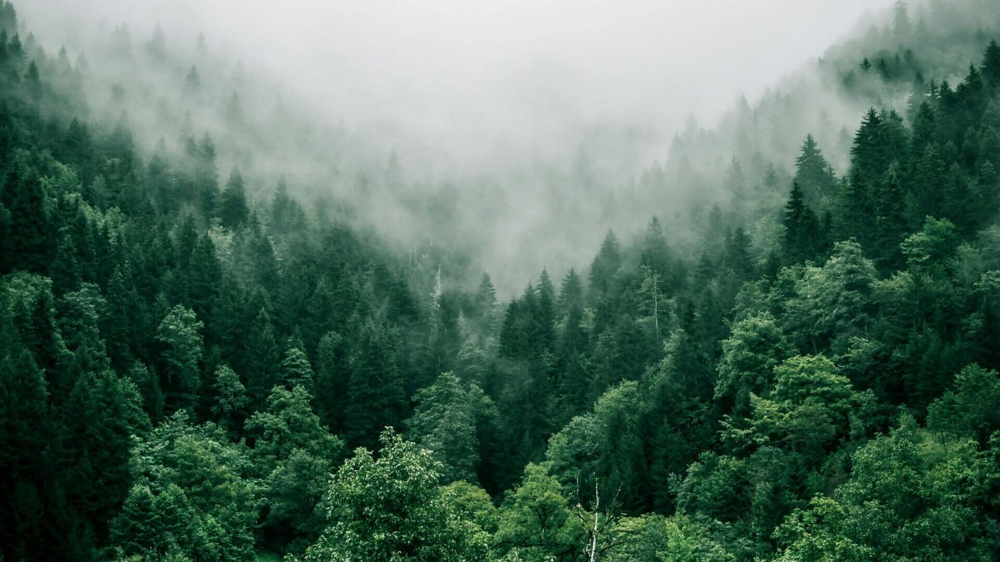
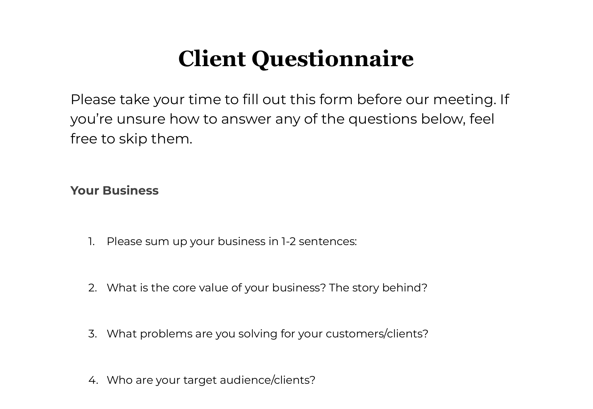
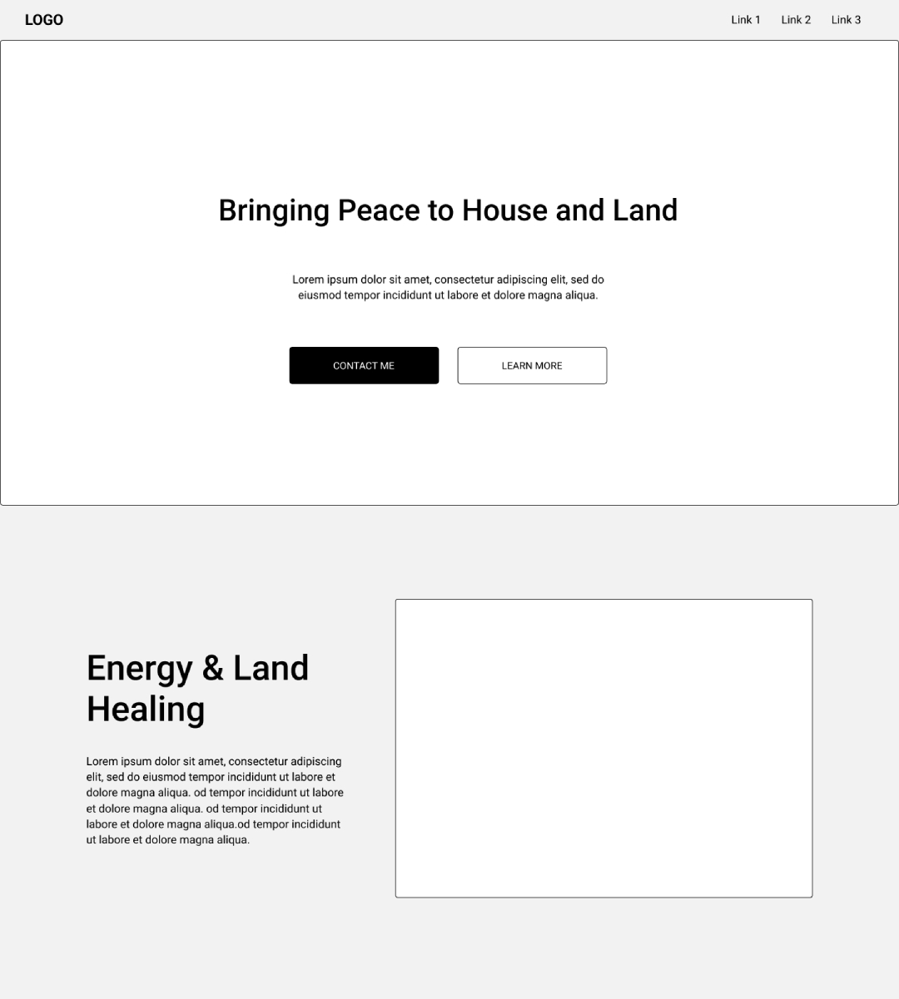
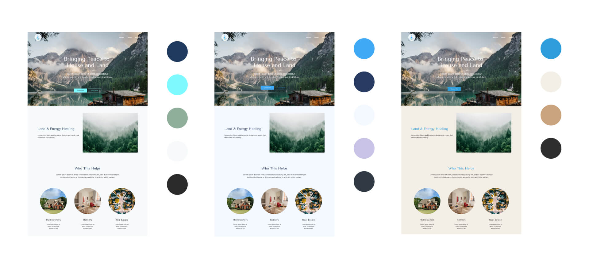
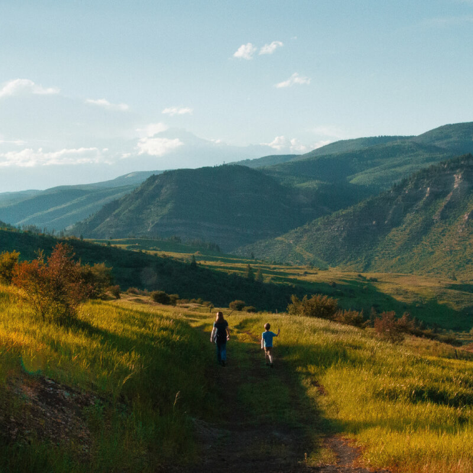
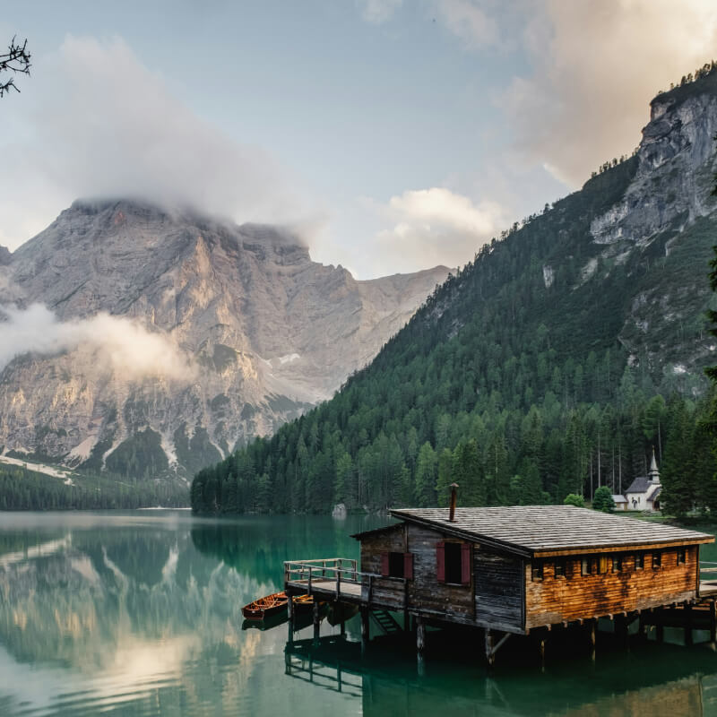
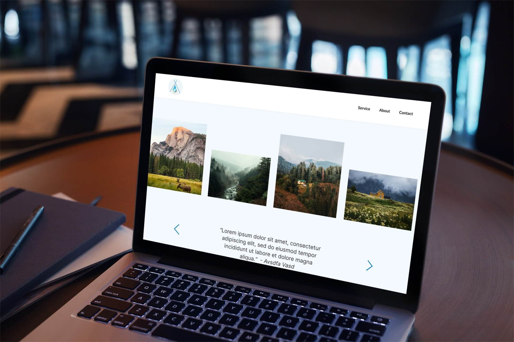
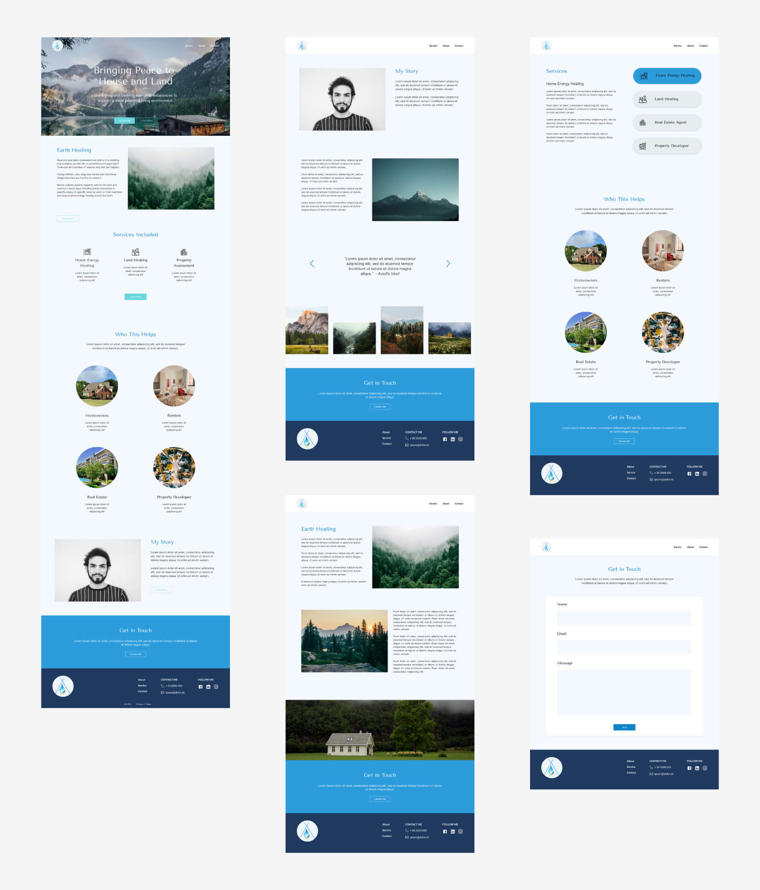

Explore Other Projects


Got something worth building?
Ready to have a website that actually feels like you? I offer a free 20-minute call to see if we're a good fit.
Book a Free ChatService: Website Design & Development
Industry: Wellness & Healing
Tools: Figma, Visual Studio Code, Miro, GitHub, Adobe Creative Suite
Date: March – April 2026
I designed and developed the website for Azul Earth Healing, focusing on creating a digital experience that feels calm, grounded, and easy to navigate. The goal was to balance clear communication of services with an atmosphere that reflects the client’s healing practice and personal values.

Azul Earth Healing is a small wellness business founded by Grant James, whose mission is to bring peace and harmony into people’s living spaces through earth healing practices.
The client needed a digital presence that could clearly communicate what he does, explain often unfamiliar healing concepts in an approachable way, and create a sense of trust and calmness for potential clients. The challenge was not only presenting information clearly, but translating an abstract, spiritual service into a visual experience that felt welcoming, aligned with the brand, and easy to understand.

To better understand the client’s business, goals, and frustrations, I created a custom project questionnaire before the design phase began. This helped uncover not only practical requirements, but also the emotional tone and experience the client wanted visitors to feel when interacting with the website.
Using the client’s responses, I defined the site structure, content hierarchy, and overall visual direction, including typography, imagery, colour palette, and interaction design.

Through analysing the questionnaire responses, several key insights emerged:
These insights informed both the visual and interaction design decisions — from typography and imagery selection to animation pacing and page transitions during development.
At the beginning of the project, much of the client’s content felt scattered and lacked a clear structure. Before moving into visual design, I focused on organising the information architecture and grouping content into clear sections and pages: Home, About, Services, and Contact.
To simplify the review process, I created low-fidelity wireframes that focused purely on layout and content structure before introducing visual styling. This helped the client focus on usability and flow without being distracted by design details too early in the process.

Based on the discovery phase, using various shades of blue became a natural design direction. I explored several colour palette variations to balance professionalism with a calming emotional tone, allowing the client to choose an option that best reflected his brand identity.

The imagery received some of the strongest positive feedback from the client.
“All the pictures on the website were chosen by her which I loved instantly. I believe she was able to do this because she listened to what my needs were and picked the pictures accordingly.” — Grant James
This came from deeply understanding the client’s business and values during the discovery process. I intentionally selected imagery connected to nature, serenity, and spaciousness to reinforce the emotional atmosphere of healing and grounding throughout the site experience.


The website was developed using HTML, CSS, and JavaScript, and hosted via GitHub Pages.
One of the main priorities during development was creating interactions that felt intentional and calming. Since the client’s work revolves around healing and spirituality, I wanted the website’s motion design to feel gentle rather than overly energetic or distracting.
For example, the hero section content fades in gradually in a slow, ordered sequence to create a sense of stillness and transition as visitors enter the site experience.

The final result was a fully responsive website that successfully balanced clarity, storytelling, and emotional atmosphere. The site gave the client a professional digital presence while staying authentic to the calm and grounded nature of his practice.
Visit Website
One of the biggest challenges during the project was managing evolving requirements. Midway through the project, the client requested the addition of an international payment system — a feature that had not been included in the original scope.
I spent significant time researching solutions that could work without requiring complex backend development. Although several options were explored, technical and regional limitations ultimately prevented implementation.
This experience reinforced the importance of defining project scope clearly from the beginning and documenting expectations in a formal agreement to reduce the risk of scope creep later on.
More importantly, the project highlighted how valuable early discovery and communication can be. The custom questionnaire and upfront planning process helped create alignment early, making later design and development decisions far more intentional and efficient.
Lulu created a really good professional website for me. We had many challenges in getting all things I required, including setting up a payment system that works in South America to accept international payments. All the pictures on the website were chosen by her which I loved instantly. I believe she was able to do this because she listened to what my needs were and picked the pictures accordingly. Highly recommend her services to anyone who requires a new website.
- Grant James
Ready to have a website that actually feels like you? I offer a free 20-minute call to see if we're a good fit.
Book a Free Chat